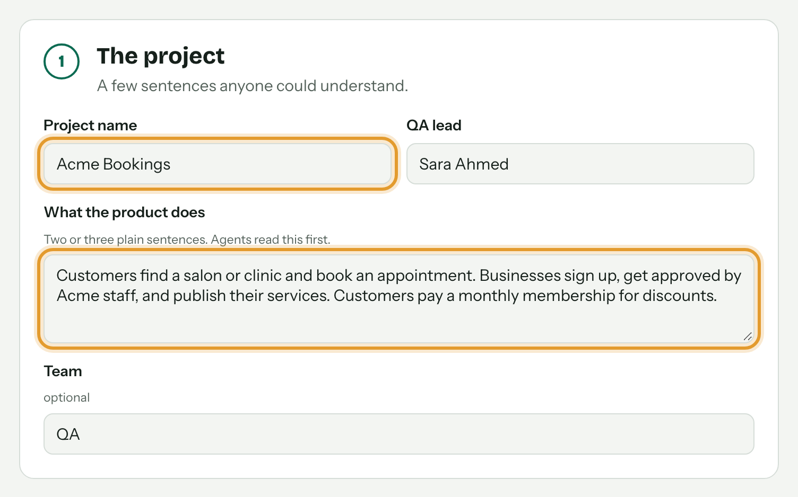
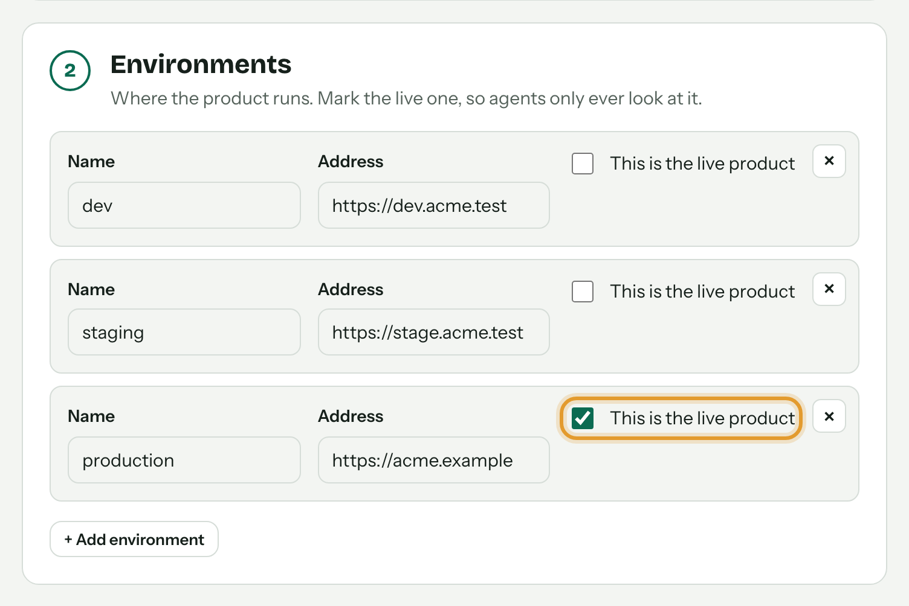
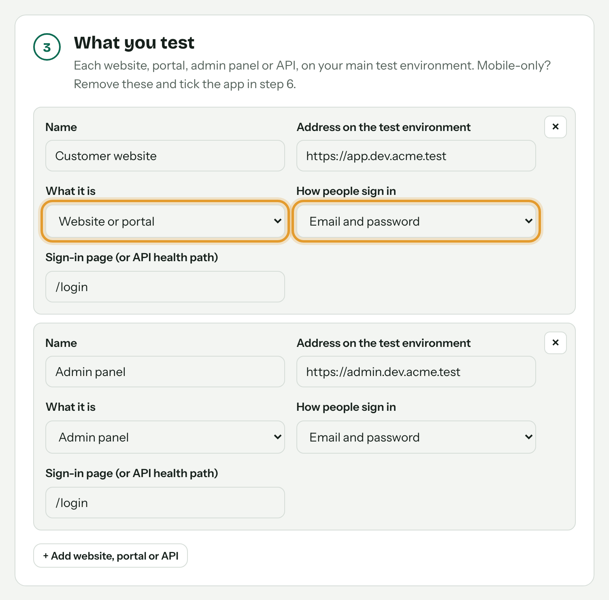
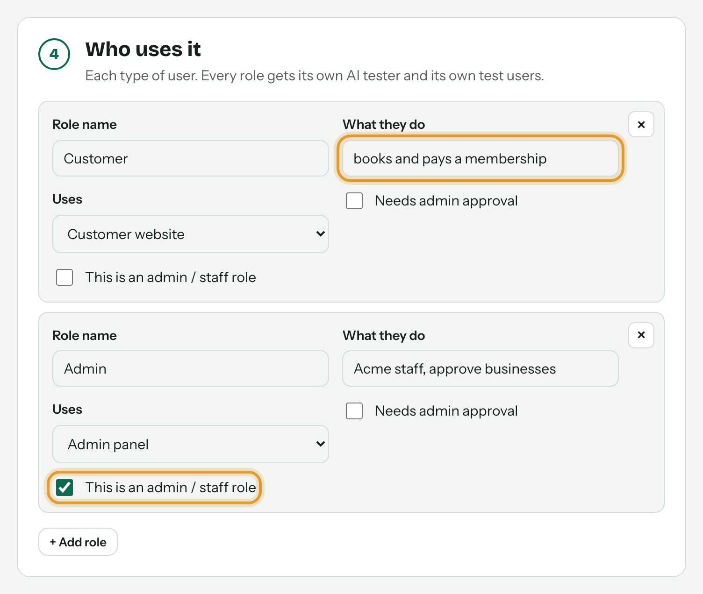
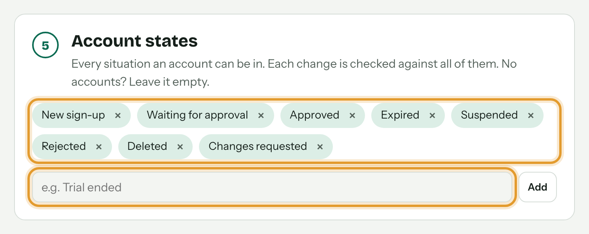
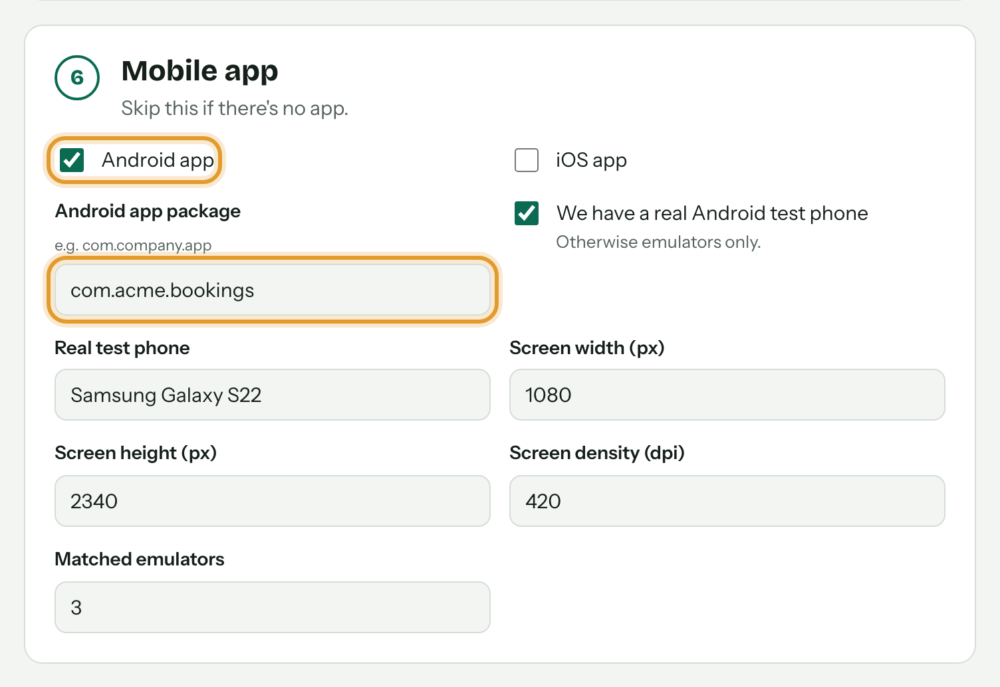
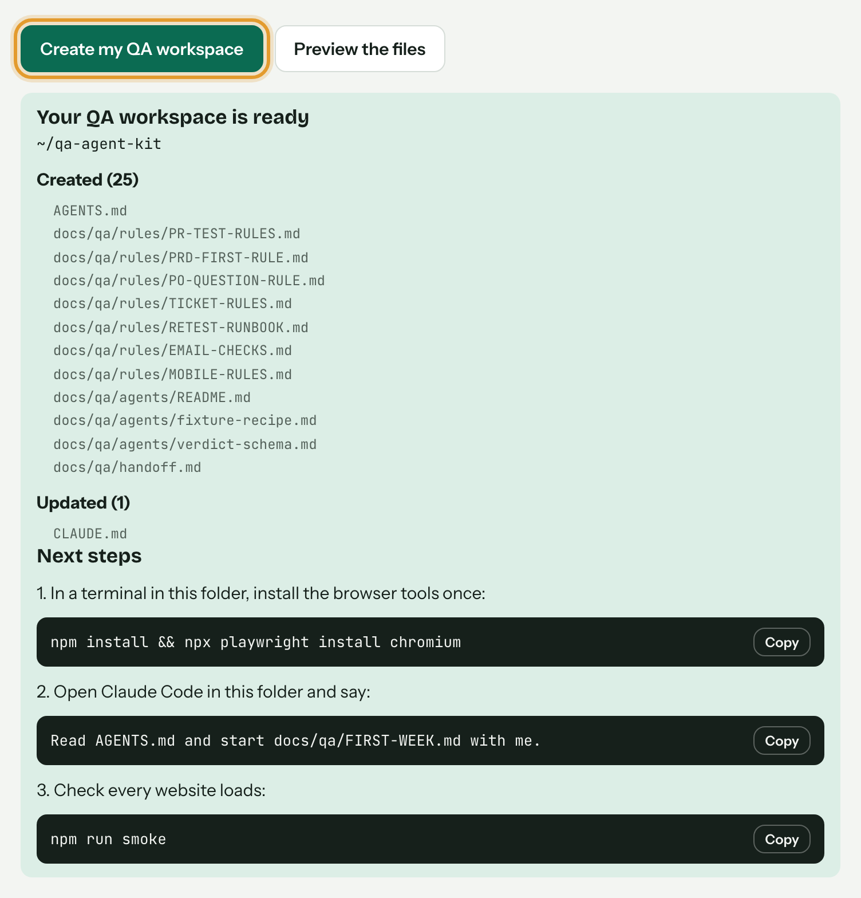

Here is how it works, in about two minutes.

Two or three plain sentences. The agents read this first.
The orange ring shows what to fill in
Agents only ever look at the live product. They never change it.

Pick what it is and how people sign in.

Each role gets its own AI tester. Tick which one is staff.

Type one and press Add. Every change is checked against all of them.

Android package or iPhone bundle id. No app? Skip this step.

Rules, agents and checklists, written for your product.
A fresh agent repeats every issue with clicks and real emails only.
Grouped, with proof. Every use case marked Pass, Fail or Not covered.
Full guide in the README. Questions? Ask Ali Rizvi, QA.